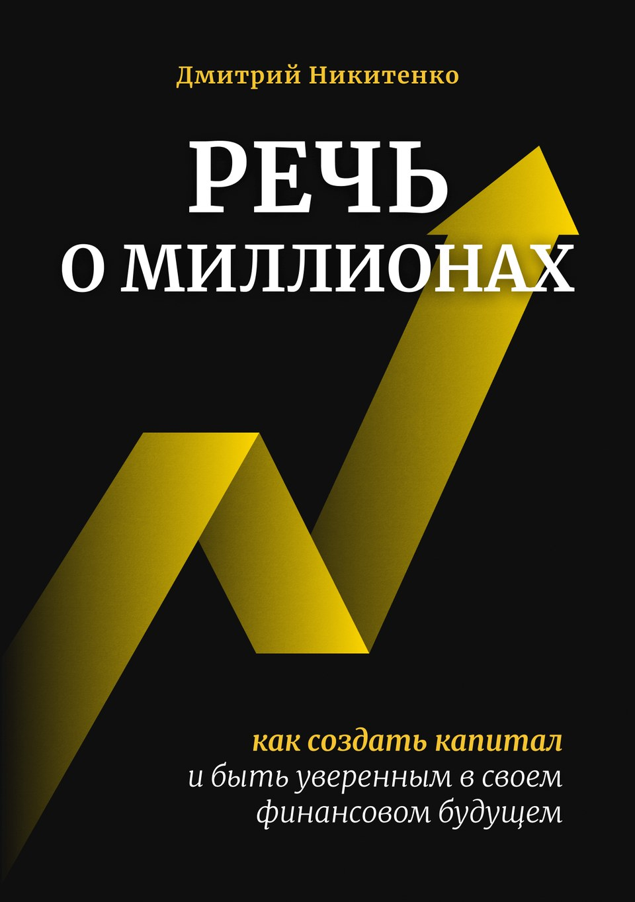

Разобраться в основах
Понять, как связаны доходность, риск, инфляция и издержки. Научиться оценивать результат инвестиций.
Дмитрий Никитенко · книга об инвестициях
Как создать капитал и быть уверенным
в своём финансовом будущем
От первых сбережений до собственного инвестиционного портфеля. Пассивный подход, финансовое планирование и российская специфика — без ежедневного слежения за рынком.

Подход
Деньги зарабатываются в карьере или бизнесе. Инвестиции помогают распорядиться уже заработанным и распределить его во времени. Эта книга — о том, как делать это осознанно.
Для тех, кто начинает откладывать, и тех, у кого уже есть накопления, но ещё нет понятного плана. Финансовое образование не требуется.
Понять, как связаны доходность, риск, инфляция и издержки. Научиться оценивать результат инвестиций.
Определить сроки, ресурсы и допустимый риск. Составить финансовый план, который начинается с ваших задач, а не с выбора «лучшей акции».
Разобраться в распределении активов, диверсификации, финансовых инструментах. Перейти от случайных покупок к целостной инвестиционной стратегии.
Организовать пополнения и ребалансировку без постоянного чтения новостей. Пассивный подход не отменяет риск, но помогает не тратить время на попытки угадать движения рынка.
Содержание
3 части · 29 глав
Один последовательный маршрут
Часть I Главы 1–12
Доходность и риск, эффективность рынка, проблемы активного управления. Пассивное инвестирование и классы активов: от денежного рынка до акций и золота.
Часть II Главы 13–20
Финансовый план, распределение активов и глобальная диверсификация. Примеры портфелей под разные цели, пополнения и ребалансировка.
Часть III Главы 21–29
Как устроены фонды, какие расходы и налоги учитывать, как выбирать фонды, облигации, брокеров. Практические вопросы торговли и размещения активов.
Первые семь глав: от основных понятий до принципов пассивного инвестирования доступны для бесплатного ознакомления.
Мнения читателей
«Автор книги является айтишником со склонностью всё выражать в циферках, анализировать, и аккуратно раскладывать по полочкам – неудивительно, что у него в итоге получилось практически идеальное пособие по вкатыванию в тему инвестиций для всех, кому близок такой въедливый аналитический подход. Прочитав эту книгу, вы познакомитесь со всеми основными понятиями, которые надо знать и понимать начинающему (а также продолжающему) инвестору – там системно и достаточно подробно рассматриваются как теоретические, так и практические вопросы: классы активов, составление портфеля, выбор брокера, и так далее. Сам Дима придерживается пассивного подхода к инвестированию – именно такого, с которого и надо начинать как минимум 95% всех людей (даже если они сами об этом еще не знают)».
«Для пассивного инвестирования топ. До этого по ПИ читал книги, что рекомендовал Спирин и в целом его сайт. Так вот в этой книге, по ощущениям, собрана вся та инфа в одном месте, что я читал в других книгах. Новичку буквально можно прочитать только ее одну и он уже будет знать базу».
«Отличная книга написанная доступным языком, но и требующая вдумчивого чтения».
Электронная книга
Знания, помогающие осознанно управлять своими деньгами.
EPUB и KFX для ридеров
PDF/A в размерах B5 и A5
Речь о миллионах
890 ₽
Электронная версия · 426 страниц
Купить электронную книгу Сначала прочитать фрагментНет. Книга начинается с базовых понятий и постепенно переходит к финансовому планированию, портфельной теории и практическим вопросам. Если останутся вопросы, приходите в чат (вход свободный).
Нет. Это руководство по долгосрочному пассивному инвестированию. В нём нет рецептов быстрого обогащения, торговых сигналов и обещаний гарантированного результата.
Да. Первые семь глав доступны бесплатно в PDF — можно оценить содержание и стиль, прежде чем принимать решение.